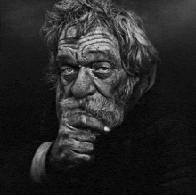

Jeg heter Emrik og jeg er 15 år. Jeg har busrdag den syvende desember. Jeg har to søsken og en hund. Hunden min heter Hiro og han er en blandingsrase. Jeg liker å spille videospill og basketball.
Favoritt nettsiden min er:
YoutubeJeg bor med familien min som består av min mor, far, bror og søster. Moren min heter Trine og er 54 år gammel. Faren min heter André og er 50 år gammel.
Begge søskene mine er eldre enn meg så jeg er yngst. Broren min heter William og er 20 år gammel. Søsteren min heter Mathea og er 22 år gammel
Jeg har ingen konkrete drømmer for fremtiden akkurat nå, men jeg vil helst leve et lykkelig liv. Jeg vil også forhåpentligvis lage en egen familie som gjør meg glad med min kjæreste/kone.
